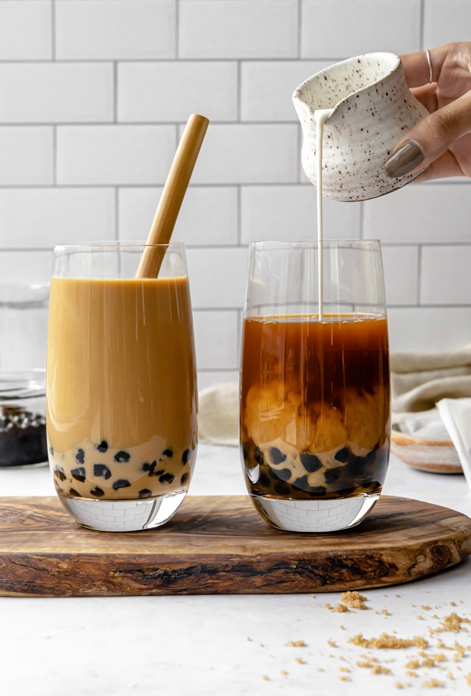

Milk Tea Boba

Starting in taiwan in the early 1980s, milk tea boba has taken the world by surprised with its delicious and unique take on a thousand year old drink.
As Boba drinks became popularized, people did their own takes on the drink and created a wide variety of amazing drinks.
Ingredients
For the boba pearls
- 8 cups water
- 1/2 of tapioca pearls
For the tea
- 2.5 tablespoons black tea
- 4 cups water
For the simple syrup
- 1/2 of white sugar
- 1/2 of water
Final Drink
- 1 and 3/4 cup brewed tea
- 1/4 cup milk
- 1/4 cup simple syrup
- 1/4 cup ice
- 1/2 cup taioca pearls
instructions
-
Add water and sugar to a saucepan over medium heat. Once the sugar completely dissolves, your simple syrup is ready to use or store in a clean jar.
-
In a separate saucepan, cook the tapioca pearls in boiling water for 5 to 8 minutes. Once cooked, remove the pearls from the hot water. Transfer them into a bowl of iced cold water for 2 minutes. Remove your boba from the water and mix in half of the simple syrup.
-
Steep the tea leaves in boiled water for about 5 to 10 minutes. Remove the tea leaves according to your desired consistency.
-
Pour in the ice, simple syrup, tea, and milk into a glass.
-
Finally, add your tapioca pearls on top of the drink. Serve your bubble tea with a thick straw and enjoy!
Hope you enjoyed the recipe, for more recipes check out Main recipes site